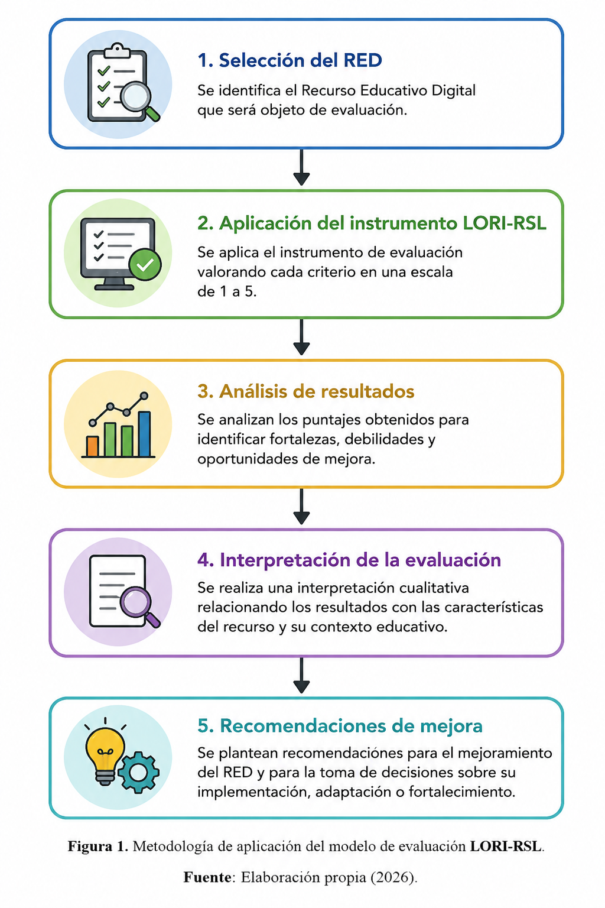
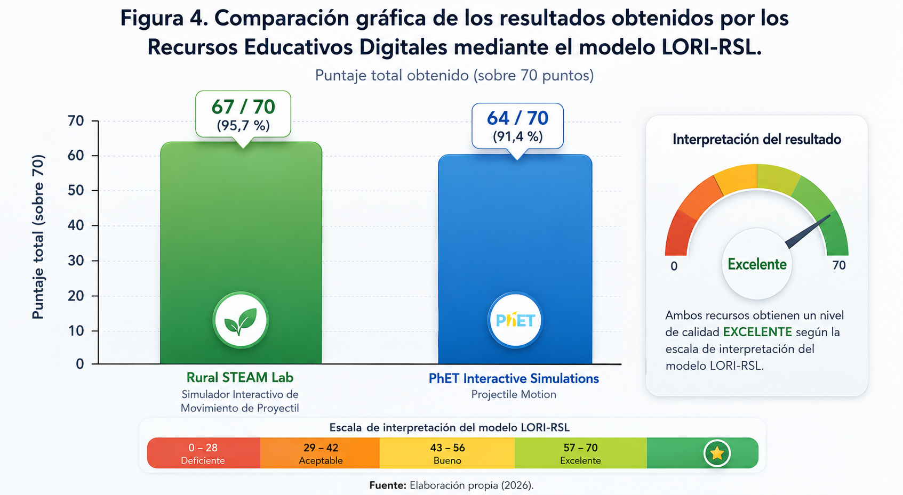

📊 Aplicación del modelo de evaluación LORI-RSL
1. Introducción
Una vez culminado el proceso de rediseño del modelo de evaluación LORI-RSL, se procedió a su implementación con el propósito de validar su funcionamiento en un contexto real de evaluación de Recursos Educativos Digitales. Para ello, el instrumento fue aplicado a dos recursos sobre la temática Movimiento de Proyectil: el simulador Rural STEAM Lab – Simulador Interactivo de Movimiento de Proyectil y la simulación PhET Interactive Simulations – Projectile Motion, ambos dirigidos a estudiantes de grado décimo en el área de Física.
La aplicación del modelo permitió valorar de manera sistemática los catorce criterios que conforman el instrumento LORI-RSL, integrando los nueve indicadores originales del modelo LORI con cinco nuevos criterios relacionados con la integración del enfoque STEAM, la contextualización al entorno educativo, la calidad de las simulaciones interactivas, el desarrollo del pensamiento sistémico y la gamificación. Esta implementación tuvo como finalidad comprobar la pertinencia del modelo propuesto y analizar su capacidad para ofrecer una evaluación más completa de los Recursos Educativos Digitales.
Los resultados obtenidos permitieron identificar las fortalezas y oportunidades de mejora de cada recurso evaluado, así como evidenciar el aporte de los nuevos criterios incorporados al modelo. De esta manera, la implementación del LORI-RSL constituye una fase de validación que demuestra la utilidad del instrumento para apoyar los procesos de selección, evaluación y mejoramiento continuo de Recursos Educativos Digitales en diferentes contextos educativos.
2. Metodología de aplicación del modelo LORI-RSL
Con el propósito de validar la pertinencia del modelo de evaluación LORI-RSL, se diseñó una metodología de aplicación estructurada en cinco etapas secuenciales que permitieron desarrollar el proceso de evaluación de manera sistemática, objetiva y organizada. Esta metodología orientó la implementación del instrumento en los dos Recursos Educativos Digitales seleccionados, garantizando la valoración de cada uno de los criterios establecidos en el modelo y facilitando el análisis e interpretación de los resultados obtenidos.
En la primera etapa se realizó la selección del Recurso Educativo Digital (RED), identificando aquellos recursos que, por sus características pedagógicas y tecnológicas, resultaban adecuados para el proceso de evaluación. Para este trabajo se seleccionaron el simulador Rural STEAM Lab – Simulador Interactivo de Movimiento de Proyectil y la simulación PhET Interactive Simulations – Projectile Motion, ambos orientados a la enseñanza del movimiento parabólico en estudiantes de educación media.
Posteriormente, se llevó a cabo la aplicación del instrumento LORI-RSL, valorando cada uno de los catorce criterios mediante una escala de uno (1) a cinco (5), donde uno representa el nivel más bajo de cumplimiento y cinco el nivel más alto de calidad. Esta valoración permitió obtener un puntaje cuantitativo para cada recurso y una apreciación cualitativa de sus fortalezas y oportunidades de mejora.
Una vez obtenidos los puntajes, se desarrolló la etapa de análisis de resultados, en la cual se compararon los valores alcanzados por cada recurso en los diferentes criterios del modelo. Posteriormente, se realizó la interpretación de la evaluación, relacionando los resultados con las características pedagógicas, tecnológicas y comunicacionales de cada Recurso Educativo Digital. Finalmente, se formularon recomendaciones de mejora orientadas a fortalecer aquellos aspectos susceptibles de optimización y a apoyar la toma de decisiones sobre la implementación y uso de los recursos en contextos educativos.
La metodología propuesta garantiza un proceso de evaluación organizado y reproducible, permitiendo que el modelo LORI-RSL pueda ser aplicado en diferentes Recursos Educativos Digitales y adaptado a diversos escenarios de enseñanza y aprendizaje.

Figura 1. Metodología de aplicación del modelo de evaluación LORI-RSL. Fuente: Elaboración propia (2026).
3. Instrumento de evaluación aplicado
La implementación del modelo LORI-RSL se realizó mediante un instrumento de evaluación diseñado para valorar integralmente la calidad de los Recursos Educativos Digitales desde las dimensiones pedagógica, tecnológica y comunicacional. Este instrumento constituye la principal herramienta del modelo y fue elaborado a partir de la estructura original del Learning Object Review Instrument (LORI), conservando sus nueve criterios de evaluación e incorporando cinco nuevos indicadores derivados del proceso de rediseño.
Los nuevos criterios fueron diseñados para responder a las necesidades de evaluación de Recursos Educativos Digitales que integran metodologías activas, simulaciones interactivas y el enfoque STEAM, permitiendo valorar aspectos que no eran considerados de manera explícita por el modelo original. En consecuencia, el instrumento LORI-RSL está conformado por catorce criterios de evaluación, cada uno de ellos orientado a analizar un aspecto específico de la calidad del recurso.
La valoración de cada criterio se realizó utilizando una escala de uno (1) a cinco (5), donde el valor 1 representa el nivel más bajo de cumplimiento y el valor 5 el nivel más alto de calidad. La suma de los puntajes obtenidos permite establecer una valoración global del recurso educativo, identificar sus fortalezas, reconocer oportunidades de mejora y facilitar la toma de decisiones relacionadas con su implementación y perfeccionamiento.
Figura 2. Estructura del instrumento de evaluación LORI-RSL. Fuente: Elaboración propia (2026).
A continuación se presenta el instrumento de evaluación utilizado durante la aplicación del modelo LORI-RSL.
Tabla 1. Instrumento de evaluación del modelo LORI-RSL
| N.º | Criterio de evaluación | Descripción | Puntaje (1-5) |
|---|---|---|---|
| 1 | Calidad del contenido | Evalúa la precisión, actualidad, pertinencia y rigurosidad de la información presentada por el recurso. | ☐ |
| 2 | Alineación con los objetivos de aprendizaje | Determina el grado de correspondencia entre el recurso y los objetivos educativos propuestos. | ☐ |
| 3 | Retroalimentación y adaptabilidad | Valora la calidad de la retroalimentación ofrecida al estudiante y la capacidad del recurso para responder a diferentes necesidades de aprendizaje. | ☐ |
| 4 | Motivación | Evalúa la capacidad del recurso para despertar el interés y mantener la participación del estudiante. | ☐ |
| 5 | Diseño de la presentación | Analiza la organización visual, legibilidad, estructura y presentación gráfica del recurso. | ☐ |
| 6 | Usabilidad e interacción | Evalúa la facilidad de navegación, utilización e interacción con el recurso educativo. | ☐ |
| 7 | Accesibilidad | Determina si el recurso puede ser utilizado por diferentes tipos de usuarios y dispositivos. | ☐ |
| 8 | Reutilización | Valora la posibilidad de reutilizar el recurso en diferentes contextos educativos y asignaturas. | ☐ |
| 9 | Cumplimiento de estándares | Evalúa el cumplimiento de estándares técnicos y educativos que favorecen la interoperabilidad del recurso. | ☐ |
| 10 | Integración del enfoque STEAM | Analiza la incorporación de actividades interdisciplinarias que integren Ciencia, Tecnología, Ingeniería, Arte y Matemáticas. | ☐ |
| 11 | Contextualización al entorno educativo | Valora la capacidad del recurso para adaptarse a las características del contexto donde será utilizado. | ☐ |
| 12 | Calidad de las simulaciones interactivas | Evalúa la precisión, interactividad y capacidad de experimentación de las simulaciones incorporadas en el recurso. | ☐ |
| 13 | Desarrollo del pensamiento sistémico | Analiza si el recurso favorece la comprensión de las relaciones entre conceptos y el análisis integral de los fenómenos estudiados. | ☐ |
| 14 | Gamificación y participación del estudiante | Valora la incorporación de elementos que promuevan la motivación, el compromiso y la participación mediante estrategias de gamificación. | ☐ |
Puntaje total: ______ / 70 puntos
Al finalizar la aplicación del instrumento, el puntaje total obtenido por cada Recurso Educativo Digital se interpretó mediante la escala de valoración establecida para el modelo LORI-RSL, permitiendo clasificar el nivel de calidad alcanzado y orientar el análisis comparativo entre los recursos evaluados.
4. Aplicación del modelo LORI-RSL al Recurso Educativo Digital 1
Rural STEAM Lab – Simulador Interactivo de Movimiento de Proyectil
Con el propósito de validar la aplicabilidad del modelo LORI-RSL, el instrumento de evaluación fue implementado en el recurso educativo digital Rural STEAM Lab – Simulador Interactivo de Movimiento de Proyectil, desarrollado para apoyar la enseñanza del movimiento parabólico en estudiantes de educación media. Este recurso fue seleccionado por integrar simulaciones interactivas, actividades orientadas al aprendizaje activo y un enfoque pedagógico fundamentado en la metodología STEAM, características que permiten valorar de manera integral los nuevos criterios incorporados al modelo propuesto.
La evaluación se realizó mediante la aplicación de los catorce criterios establecidos en el instrumento LORI-RSL, asignando una valoración entre uno (1) y cinco (5) para cada uno de ellos. El proceso permitió analizar tanto la calidad pedagógica y tecnológica del recurso como los aspectos relacionados con la contextualización educativa, la integración interdisciplinaria, la calidad de las simulaciones y la participación del estudiante.

Figura 3. Rural STEAM Lab – Simulador Interactivo de Movimiento de Proyectil. Fuente: Rural STEAM Lab (2026).
Los resultados obtenidos mediante la aplicación del instrumento LORI-RSL se presentan en la Tabla 2. En ella se observa la valoración asignada a cada uno de los catorce criterios establecidos por el modelo, así como el puntaje total alcanzado por el recurso educativo evaluado.
Tabla 2. Resultados de la aplicación del modelo LORI-RSL al RED Rural STEAM Lab
| Criterio de evaluación | Puntaje | Valoración |
|---|---|---|
| Calidad del contenido | 5 | 🟢 Excelente |
| Alineación con los objetivos de aprendizaje | 5 | 🟢 Excelente |
| Retroalimentación y adaptabilidad | 4 | 🟡 Bueno |
| Motivación | 5 | 🟢 Excelente |
| Diseño de la presentación | 5 | 🟢 Excelente |
| Usabilidad e interacción | 5 | 🟢 Excelente |
| Accesibilidad | 4 | 🟡 Bueno |
| Reutilización | 5 | 🟢 Excelente |
| Cumplimiento de estándares | 5 | 🟢 Excelente |
| Integración del enfoque STEAM | 5 | 🟢 Excelente |
| Contextualización al entorno educativo | 5 | 🟢 Excelente |
| Calidad de las simulaciones interactivas | 5 | 🟢 Excelente |
| Desarrollo del pensamiento sistémico | 5 | 🟢 Excelente |
| Gamificación y participación del estudiante | 4 | 🟡 Bueno |
Puntaje total: 67 / 70 puntos | Nivel de calidad: Excelente (95,7 %)
Análisis de resultados
La aplicación del modelo LORI-RSL evidenció que el simulador Rural STEAM Lab presenta un nivel de calidad Excelente, alcanzando un puntaje de 67 sobre 70 puntos, equivalente al 95,7 % de cumplimiento de los criterios establecidos en el instrumento. Los resultados reflejan un alto nivel de coherencia entre los objetivos de aprendizaje, los contenidos desarrollados y las estrategias didácticas implementadas, favoreciendo la comprensión del movimiento de proyectil mediante actividades de exploración y experimentación virtual.
Los criterios incorporados durante el rediseño del modelo permitieron identificar fortalezas que difícilmente podrían evaluarse mediante el instrumento LORI original. En particular, el recurso obtuvo las máximas valoraciones en la integración del enfoque STEAM, la contextualización al entorno educativo, la calidad de las simulaciones interactivas y el desarrollo del pensamiento sistémico, aspectos que evidencian su pertinencia para contextos escolares y, especialmente, para instituciones educativas rurales.
Las oportunidades de mejora se concentraron en los criterios de retroalimentación y adaptabilidad, así como en gamificación y participación del estudiante, los cuales obtuvieron una valoración de cuatro (4) puntos. Aunque estos aspectos presentan un desempeño satisfactorio, podrían fortalecerse mediante la incorporación de retroalimentación personalizada, niveles progresivos de dificultad, insignias digitales o mecanismos de seguimiento del progreso del estudiante, con el fin de incrementar la motivación y enriquecer la experiencia de aprendizaje.
En términos generales, los resultados obtenidos confirman que el modelo LORI-RSL permite realizar una evaluación amplia y objetiva del recurso, integrando dimensiones pedagógicas, tecnológicas y comunicacionales que contribuyen a valorar con mayor precisión la calidad de los Recursos Educativos Digitales.
5. Aplicación del modelo LORI-RSL al Recurso Educativo Digital 2
PhET Interactive Simulations – Projectile Motion
Con el propósito de complementar el proceso de validación del modelo LORI-RSL, el instrumento de evaluación fue aplicado al recurso educativo digital PhET Interactive Simulations – Projectile Motion, desarrollado por la Universidad de Colorado Boulder. Este recurso fue seleccionado por ser uno de los simuladores educativos más reconocidos a nivel internacional para la enseñanza de la Física, ofreciendo un entorno interactivo que permite experimentar con variables como el ángulo de lanzamiento, la velocidad inicial, la masa y la gravedad, favoreciendo la comprensión del movimiento parabólico mediante la experimentación virtual.
La evaluación se realizó utilizando los catorce criterios establecidos en el modelo LORI-RSL, asignando una valoración entre uno (1) y cinco (5) para cada criterio. Este procedimiento permitió valorar la calidad pedagógica, tecnológica y comunicacional del recurso, así como analizar el comportamiento de los cinco nuevos indicadores incorporados durante el proceso de rediseño del modelo.

Figura 4. PhET Interactive Simulations – Projectile Motion. Fuente: PhET Interactive Simulations (2026).
Los resultados obtenidos mediante la aplicación del instrumento LORI-RSL se presentan en la Tabla 3, donde se detalla la valoración de cada criterio y el puntaje total alcanzado por el recurso educativo evaluado.
Tabla 3. Resultados de la aplicación del modelo LORI-RSL al RED PhET Interactive Simulations
| Criterio de evaluación | Puntaje | Valoración |
|---|---|---|
| Calidad del contenido | 5 | 🟢 Excelente |
| Alineación con los objetivos de aprendizaje | 5 | 🟢 Excelente |
| Retroalimentación y adaptabilidad | 4 | 🟡 Bueno |
| Motivación | 5 | 🟢 Excelente |
| Diseño de la presentación | 5 | 🟢 Excelente |
| Usabilidad e interacción | 5 | 🟢 Excelente |
| Accesibilidad | 5 | 🟢 Excelente |
| Reutilización | 5 | 🟢 Excelente |
| Cumplimiento de estándares | 5 | 🟢 Excelente |
| Integración del enfoque STEAM | 4 | 🟡 Bueno |
| Contextualización al entorno educativo | 3 | 🟠 Aceptable |
| Calidad de las simulaciones interactivas | 5 | 🟢 Excelente |
| Desarrollo del pensamiento sistémico | 4 | 🟡 Bueno |
| Gamificación y participación del estudiante | 4 | 🟡 Bueno |
Puntaje total: 64 / 70 puntos | Nivel de calidad: Excelente (91,4 %)
Análisis de resultados
La aplicación del modelo LORI-RSL permitió determinar que el recurso PhET Interactive Simulations – Projectile Motion alcanza un nivel de calidad Excelente, obteniendo un puntaje de 64 sobre 70 puntos, equivalente al 91,4 % del puntaje máximo establecido por el instrumento. Los resultados evidencian un recurso altamente consolidado desde el punto de vista científico y tecnológico, destacándose por la precisión de sus contenidos, la facilidad de uso, la estabilidad de la plataforma y la calidad de las simulaciones que ofrece para el aprendizaje del movimiento parabólico.
Los criterios tradicionales del modelo LORI obtuvieron valoraciones altas, especialmente aquellos relacionados con la calidad del contenido, el diseño de la interfaz, la usabilidad, la reutilización y el cumplimiento de estándares técnicos. Estas características han convertido a PhET en uno de los recursos educativos digitales de mayor reconocimiento y utilización en instituciones educativas y universidades de diferentes países.
La incorporación de los nuevos criterios del modelo LORI-RSL permitió identificar aspectos que el modelo original no evaluaba de forma explícita. En este sentido, el recurso obtuvo una valoración menor en contextualización al entorno educativo, debido a que fue diseñado como una herramienta de uso general y no contempla adaptaciones específicas para contextos locales o rurales. De igual manera, la integración del enfoque STEAM y el desarrollo del pensamiento sistémico se presentan de manera implícita, razón por la cual recibieron una valoración inferior a la obtenida por el simulador Rural STEAM Lab.
En términos generales, los resultados demuestran que PhET Interactive Simulations constituye un recurso educativo digital de alta calidad y que el modelo LORI-RSL permite identificar fortalezas y oportunidades de mejora que no serían visibles mediante la aplicación exclusiva del modelo LORI original. Esto confirma la utilidad de los nuevos criterios incorporados durante el proceso de rediseño y fortalece la validez del modelo propuesto.
6. Comparación de resultados
Una vez aplicado el modelo de evaluación LORI-RSL a los dos Recursos Educativos Digitales seleccionados, se realizó un análisis comparativo con el propósito de identificar sus fortalezas, diferencias y oportunidades de mejora. Esta comparación permitió valorar el comportamiento de cada recurso frente a los catorce criterios del instrumento y, al mismo tiempo, validar la capacidad del modelo para diferenciar recursos educativos con características pedagógicas y tecnológicas distintas.
Los resultados obtenidos evidencian que ambos Recursos Educativos Digitales alcanzan un nivel de calidad Excelente, superando el 90 % del puntaje máximo establecido por el modelo LORI-RSL. Sin embargo, el análisis detallado muestra diferencias importantes en algunos de los nuevos criterios incorporados durante el proceso de rediseño, demostrando que estos indicadores aportan información adicional que no es posible obtener mediante la aplicación del modelo LORI original.
Tabla 4. Comparación de los resultados obtenidos mediante el modelo LORI-RSL
| Criterio de evaluación | Rural STEAM Lab | PhET Interactive Simulations |
|---|---|---|
| Calidad del contenido | 🟢 5 | 🟢 5 |
| Alineación con los objetivos de aprendizaje | 🟢 5 | 🟢 5 |
| Retroalimentación y adaptabilidad | 🟡 4 | 🟡 4 |
| Motivación | 🟢 5 | 🟢 5 |
| Diseño de la presentación | 🟢 5 | 🟢 5 |
| Usabilidad e interacción | 🟢 5 | 🟢 5 |
| Accesibilidad | 🟡 4 | 🟢 5 |
| Reutilización | 🟢 5 | 🟢 5 |
| Cumplimiento de estándares | 🟢 5 | 🟢 5 |
| Integración del enfoque STEAM | 🟢 5 | 🟡 4 |
| Contextualización al entorno educativo | 🟢 5 | 🟠 3 |
| Calidad de las simulaciones interactivas | 🟢 5 | 🟢 5 |
| Desarrollo del pensamiento sistémico | 🟢 5 | 🟡 4 |
| Gamificación y participación del estudiante | 🟡 4 | 🟡 4 |
Puntaje total: Rural STEAM Lab: 67/70 (95,7 %) | PhET: 64/70 (91,4 %)
Nivel de calidad: Excelente en ambos casos.

Figura 5. Comparación gráfica de los resultados obtenidos por los Recursos Educativos Digitales mediante el modelo LORI-RSL. Fuente: Elaboración propia (2026).
📊 Dashboard comparativo LORI-RSL
Figura 6. Comparación de resultados finales de los Recursos Educativos Digitales evaluados.
La Figura 6 permite observar de manera visual el comportamiento de ambos Recursos Educativos Digitales frente al modelo LORI-RSL. Aunque ambos alcanzan un nivel de calidad excelente, Rural STEAM Lab obtiene una valoración ligeramente superior (95,7 %) debido a la incorporación del enfoque STEAM y su contextualización al entorno educativo, mientras que PhET Interactive Simulations alcanza un 91,4 % con fortalezas en accesibilidad y reconocimiento internacional.
Interpretación comparativa
El análisis comparativo evidencia que ambos Recursos Educativos Digitales presentan una calidad sobresaliente desde las dimensiones pedagógica, tecnológica y comunicacional. Tanto Rural STEAM Lab como PhET Interactive Simulations obtuvieron la máxima valoración en criterios relacionados con la calidad del contenido, la alineación con los objetivos de aprendizaje, la usabilidad, el diseño de la interfaz, la reutilización y el cumplimiento de estándares técnicos, lo que demuestra que ambos recursos constituyen herramientas pertinentes para apoyar la enseñanza del movimiento de proyectil.
No obstante, las principales diferencias se observaron en los cinco criterios incorporados durante el rediseño del modelo LORI-RSL. El simulador Rural STEAM Lab alcanzó una valoración superior en la integración del enfoque STEAM, la contextualización al entorno educativo y el desarrollo del pensamiento sistémico, debido a que fue diseñado específicamente para responder a las necesidades del contexto escolar colombiano y promover metodologías activas de aprendizaje. Por su parte, PhET Interactive Simulations obtuvo una mayor valoración en accesibilidad, gracias a su amplia disponibilidad en diferentes idiomas, plataformas y dispositivos, así como a su consolidación como uno de los simuladores educativos más utilizados a nivel internacional.
Estos resultados evidencian que la incorporación de nuevos criterios fortalece la capacidad del modelo LORI-RSL para realizar evaluaciones más completas, permitiendo identificar diferencias cualitativas entre recursos que, bajo los criterios tradicionales del modelo LORI, podrían presentar resultados muy similares. En consecuencia, el modelo propuesto ofrece una visión más amplia de la calidad de los Recursos Educativos Digitales y proporciona información relevante para apoyar los procesos de selección, implementación y mejoramiento continuo en diversos contextos educativos.
7. Validación del modelo LORI-RSL
Una vez implementado el modelo LORI-RSL en los dos Recursos Educativos Digitales seleccionados, fue posible analizar su comportamiento y determinar su pertinencia como instrumento para la evaluación de recursos educativos digitales. Los resultados obtenidos permitieron evidenciar que la incorporación de nuevos criterios fortalece el proceso de evaluación y ofrece una visión más amplia de la calidad pedagógica, tecnológica y comunicacional de los recursos. Con base en esta implementación, a continuación se presentan las respuestas a los interrogantes orientadores del Entregable 2.
¿De qué manera el modelo rediseñado permite realizar una adecuada evaluación de un Recurso Educativo Digital?
El modelo LORI-RSL permite realizar una evaluación más completa e integral de los Recursos Educativos Digitales al conservar las fortalezas del modelo LORI e incorporar cinco nuevos criterios relacionados con la integración del enfoque STEAM, la contextualización al entorno educativo, la calidad de las simulaciones interactivas, el desarrollo del pensamiento sistémico y la gamificación. La aplicación del instrumento demostró que estos nuevos indicadores complementan la evaluación tradicional, permitiendo valorar aspectos pedagógicos y tecnológicos que anteriormente no eran considerados de forma explícita.
Además, el modelo facilita un proceso de evaluación sistemático mediante una escala uniforme de valoración, permitiendo identificar fortalezas, oportunidades de mejora y aspectos susceptibles de optimización en cada recurso. Esto proporciona información objetiva para apoyar la selección, adaptación e implementación de Recursos Educativos Digitales en diferentes contextos educativos.
¿Qué ventajas tiene el modelo LORI-RSL frente a otros modelos de evaluación existentes?
El principal aporte del modelo LORI-RSL consiste en integrar las fortalezas del modelo LORI con nuevos criterios acordes con las tendencias actuales de la educación digital. Mientras otros modelos centran su evaluación en aspectos didácticos, tecnológicos o de diseño instruccional, el modelo propuesto incorpora elementos relacionados con la educación STEAM, la contextualización de los recursos, el aprendizaje mediante simulaciones y el desarrollo del pensamiento sistémico.
Otra ventaja importante es su flexibilidad de aplicación. El modelo puede utilizarse tanto para evaluar recursos educativos desarrollados localmente, como Rural STEAM Lab, como recursos de alcance internacional, como PhET Interactive Simulations, permitiendo establecer comparaciones objetivas mediante un mismo instrumento de evaluación. De esta manera, el modelo se convierte en una herramienta adaptable a diferentes niveles educativos, áreas del conocimiento y contextos institucionales.
¿Qué elementos técnicos, pedagógicos y comunicacionales pueden fortalecerse en el modelo?
Los resultados obtenidos durante la implementación permitieron identificar oportunidades de mejora tanto en el modelo como en los recursos evaluados. Desde la dimensión técnica, resulta pertinente fortalecer aspectos relacionados con la interoperabilidad con plataformas de aprendizaje, la accesibilidad universal y la integración de analíticas de aprendizaje que permitan realizar un seguimiento más detallado del desempeño de los estudiantes.
En la dimensión pedagógica, se recomienda ampliar los mecanismos de retroalimentación personalizada, incorporar actividades con diferentes niveles de dificultad y fortalecer estrategias de gamificación que incrementen la motivación y favorezcan procesos de aprendizaje más activos. Finalmente, desde la dimensión comunicacional, es posible enriquecer la interacción entre el usuario y el recurso mediante mensajes adaptativos, ayudas contextuales y elementos visuales que faciliten la comprensión de los contenidos y mejoren la experiencia de aprendizaje.
Síntesis de la validación
La implementación realizada permitió comprobar que el modelo LORI-RSL constituye un instrumento pertinente para la evaluación de Recursos Educativos Digitales, al ofrecer una valoración integral que combina criterios pedagógicos, tecnológicos y comunicacionales con nuevos indicadores orientados a las necesidades de la educación digital contemporánea. Los resultados obtenidos en los recursos Rural STEAM Lab y PhET Interactive Simulations evidencian que el modelo es capaz de diferenciar fortalezas y oportunidades de mejora, aportando información útil para la toma de decisiones y el mejoramiento continuo de los recursos educativos.
8. Conclusiones
La implementación del modelo de evaluación LORI-RSL permitió comprobar la pertinencia de la propuesta de rediseño desarrollada a partir del modelo Learning Object Review Instrument (LORI). La incorporación de cinco nuevos criterios orientados al enfoque STEAM, la contextualización al entorno educativo, la calidad de las simulaciones interactivas, el desarrollo del pensamiento sistémico y la gamificación fortaleció la capacidad del instrumento para evaluar Recursos Educativos Digitales desde una perspectiva más amplia e integrada, respondiendo a las necesidades actuales de la educación mediada por tecnologías digitales.
La aplicación del instrumento en los Recursos Educativos Digitales Rural STEAM Lab – Simulador Interactivo de Movimiento de Proyectil y PhET Interactive Simulations – Projectile Motion permitió evidenciar que ambos recursos presentan un nivel de calidad Excelente, aunque con fortalezas diferenciadas. Mientras Rural STEAM Lab sobresalió por su contextualización al entorno educativo, la integración del enfoque STEAM y el desarrollo del pensamiento sistémico, PhET Interactive Simulations destacó por la precisión científica de sus contenidos, la accesibilidad y la consolidación tecnológica alcanzada a nivel internacional. Estos resultados demostraron que el modelo LORI-RSL es capaz de identificar diferencias cualitativas entre recursos que, mediante otros instrumentos, podrían presentar valoraciones similares.
Los resultados obtenidos permitieron validar que el modelo LORI-RSL constituye una herramienta útil para apoyar los procesos de selección, evaluación y mejoramiento continuo de Recursos Educativos Digitales. La incorporación de nuevos indicadores proporcionó información complementaria que favorece la toma de decisiones pedagógicas y tecnológicas, permitiendo valorar aspectos relacionados con las metodologías activas de aprendizaje y con las demandas de los contextos educativos contemporáneos.
Finalmente, se considera que el modelo propuesto ofrece una alternativa pertinente para la evaluación de Recursos Educativos Digitales en diferentes niveles y áreas del conocimiento. Su estructura flexible facilita futuras adaptaciones e incorpora elementos que responden a las tendencias actuales de la innovación educativa, constituyéndose en un aporte para docentes e investigadores interesados en fortalecer la calidad de los recursos digitales utilizados en los procesos de enseñanza y aprendizaje.